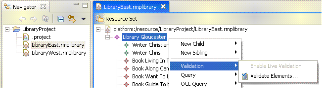

This example describes the usage of the validation framework within the SDK. It demonstrates how to specify constraints for the library meta-model and bind the constraints to the library application context.
Please refer to the document Model Services Layer Examples Overview for reviewing the library meta-model used as the basis for demonstrating the capabilities in this example.
This example plug-in is named org.eclipse.emf.validation.examples.
This plug-in contributes the Validation menu to the library
editor's main menu and context menu. The menu has two items:
EContentAdapter against the library Resource to receive
immediate notifications. Within the notifyChanged callback the model validation service is called to provide a live validation
of the Notification objectEObjects and their childrenPlease refer to the tutorial Validation Tutorial for reviewing the code samples within this example
Refer to this example if you need: